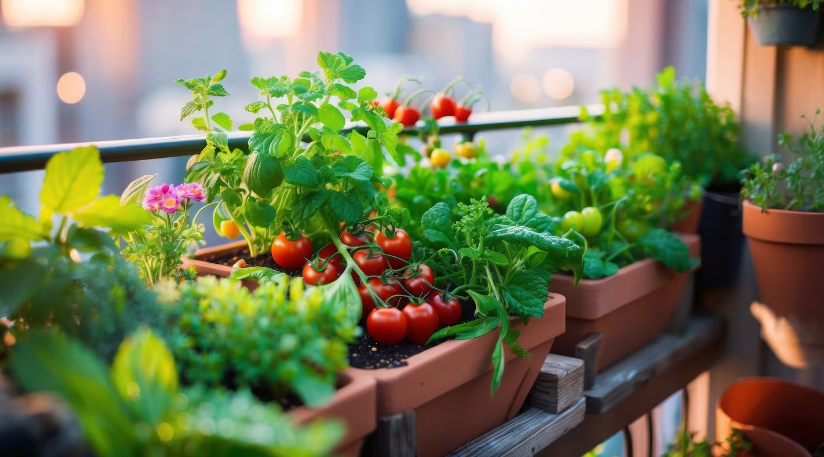

Mi huerta chiquita
Además de las plantas de interior y exterior, también cultivo una huertita en macetas:
- Hierbas aromáticas: Albahaca, menta, tomillo, romero, perejil y cilantro. Son fáciles de cuidar y siempre útiles en la cocina.
- Batatas: La verdad no produjeron mucho aun pero las hojas son divinas.
- Jengibre: Es más fácil de cultivar de lo que me imaginaba. Tardan un poco en crecer pero no exigen mucho.
- Pimientos: Tanto dulces como picantes. Necesitan mucho sol y riego regular pero son muy propensos a las plagas por lo que hay que andar con el jabón potásico manteniéndolas a raya.
Cultivar mi propia comida, aunque sea en pequeñas cantidades, me da una gran satisfacción y me conecta aún más con la naturaleza.
Volver al Home